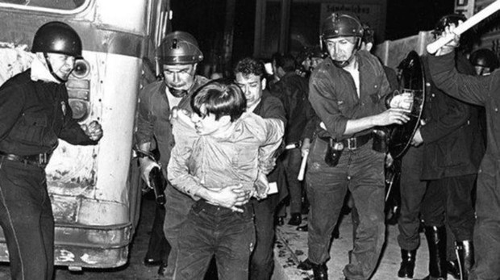

En julio de 1968, estalló en México una revuelta estudiantil que contribuyó a la lucha de los derechos estudiantiles y la reivindicación de los movimientos populares en contra de las violencias del régimen del Partido Revolucionario Institucional. La protesta sólo se aplacó tras la feroz represión y se registró la matanza cuando elementos del ejército dispararon contra centenares de jóvenes estudiantes reunidos en la Plaza de las Tres Culturas el 2 de octubre. Unos días más tarde, México celebraba los Juegos Olímpicos en una tensa paz.
Esta ambigüedad de sentimientos frente a las realidades del sistema alcanza su apogeo entre los intelectuales. Cruelmente conscientes de lo que hay de inacabado en una revolución que deja subsistir tantas injusticias, ellos evalúan mejor que nadie las grandes realizaciones del régimen en el ámbito de la cultura y también son prisioneros de las facilidades que les ofrece el gobierno. Los fusilamientos de Ciudad de México causaron una gran víctima: mataron cualquier posibilidad de ambigüedad; forzaron a los intelectuales a una opción desgarradora entre la fidelidad a sus principios y su lealtad hacia el régimen surgido de la Revolución de 1910. Esta ruptura brusca de un sutil equilibrio psicológico y político fue provocada por un simple accidente, en un clima de malestar y de tensión. Un día de julio, dos grupos de alumnos secundarios se peleaban por una chica. Aparecieron los granaderos y golpearon con un salvajismo increíble a los jóvenes de ambos bandos. Al día siguiente, la Universidad entera se alzaba en defensa de sus derechos de autonomía tradicionales.
Meses atrás los estudiantes habían iniciado un movimiento para rechazar una serie de medidas represivas que se aplicaban en lo que era el Distrito Federal que limitaban libertades y derechos. Un primer indicio interesante lo proveen las exigencias formuladas, a fines de julio, por parte de los dirigentes del movimiento universitario. El análisis de esas reivindicaciones demuestra que los partidarios de la “lucha" y los grupos pro castristas, no fueron tomados en cuenta al momento de la redacción de los reclamos dirigidos al poder. En efecto, los universitarios se limitaron a pedir el castigo de los responsables de la represión, la disolución del cuerpo de granaderos, la liberación de los estudiantes y alumnos secundarios encarcelados y la indemnización a las víctimas. Se le sumaron dos cláusulas moderadas, a pedido de algunas minorías politizadas: liberación de los prisioneros políticos y derogación del artículo 45 del Código Penal que prevé el delito de "disolución social". El gobierno, el presidente y el régimen no habían sido cuestionados en absoluto. El jefe de Estado se negó al diálogo, mientras que los servicios de inteligencia descargan la responsabilidad de los disturbios en diversos "provocadores". Es cierto que los castristas se manifestaron con violencia a partir del 26 de julio. Se decretó la huelga universitaria. Las manifestaciones eran masivas y recibieron el apoyo multitudinario de la población, y que participaban activistas de todas las tendencias que se esforzaban por provocar incidentes a cualquier precio. La brutalidad de la réplica policial, la entrada en escena de la tropa y los carros de asalto unieron en la misma furia a los contestatarios no politizados, los reformistas y los revolucionarios.
Un enfrentamiento sangriento, ocurrido el 28 de agosto, en ocasión de una manifestación que se proponía ser pacífica, abrió un segundo ciclo de violencia, que derivó en la ocupación de la Universidad por parte del Ejército, el 18 de septiembre. Al mismo tiempo, las fuerzas reaccionarias, las cámaras de comercio, los industriales y los diarios de derecha, alentados por la actitud del gobierno y fingiendo socorrer al régimen, comenzaron a atacar a los moderados progresistas en la figura del rector Barros Sierra. Y una campaña pública de difamación lo forzó a renunciar.
El 2 de octubre, en la Plaza de las Tres Culturas durante un discurso que, en principio, debía desarrollarse en forma pacífica. Si ese día intervinieron provocadores hostiles al régimen su acción no fue determinante. El dispositivo de las tropas, en el perímetro de la plaza, demuestra una voluntad de intervenir y de atacar, de cualquier forma. Todo ocurrió como si las fuerzas represivas quisieran a la vez hacer caer en la trampa a ese último bloque de manifestantes y aterrorizar a la población, a fin de interrumpir bruscamente las manifestaciones pocos días antes de la apertura de los Juegos Olímpicos.
De hecho, el poder alcanzó su objetivo, dado que la calma, restablecida provisoriamente después de la primera explosión de indignación, permitió el desarrollo de los Juegos Olímpicos. Además, este apaciguamiento se explica, en gran medida, por el patriotismo de los estudiantes, que aceptaron respetar la tregua olímpica.
El diálogo continuaba en secreto entre el poder y la Universidad. Y, después del cierre de los Juegos, el gobierno, satisfecho, dio pruebas de su voluntad de aplacamiento haciendo evacuar algunos establecimientos escolares y liberando a cierta cantidad de estudiantes detenidos. Sin embargo, las exigencias del Consejo Nacional de Huelga -liberación de todos los estudiantes detenidos desde el 26 de julio, evacuación de todos los edificios universitarios y fin de la represión- estaban lejos de verse satisfechas. Los estudiantes no podrían enfrentar al aparato represivo del régimen sin el apoyo de los trabajadores. Ahora bien, los intentos de los estudiantes activistas de arengar a la población en las plazas y mercados, no dieron ningún resultado. Todo parece indicar, pues, que la verdadera lucha de la que depende el futuro del país se desarrollará, en calma y en secreto, dentro del partido oficial.
El Universal. (2 de octubre de 2019). ¿Qué pasó el 2 de octubre de 1968 en Tlatelolco? Youtube. Ver
Testimonio
Ciudadano del Mundo. (27 de septiembre de 2016). Fragmento 1968 / En Memoria a Fausto Trejo / Realización: Óscar Menéndez. Youtube. Ver
Bibliografía
Le Monde Diplomatique (2018). Explorador Especial 1968.
Artículos:
“La masacre de Tlatelolco” Elena de la Souchere (p.41-43).